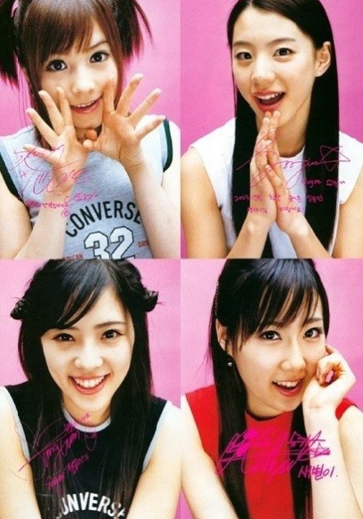

2001년 12월에 데뷔한 스타월드 소속 4인조 아이돌 걸그룹. 2006년 12월 20일에 정식으로 해체했다.
팀명인 슈가는 '설탕처럼 새하얀 순수함으로 많은 사람들에게 달콤한 즐거움을 주는 걸그룹'이 되고자 하는 의미이다.
걸그룹 암흑기였던 2000년대 초중반에 활동하였으며, 1위를 한 적은 없으나 귀여운 스타일의 컨셉으로 꾸준히 인기가 있었다. 특히 초반에는 재일교포 3세 출신 멤버 아유미가 각종 예능에서 활약하면서 인지도를 올렸다.